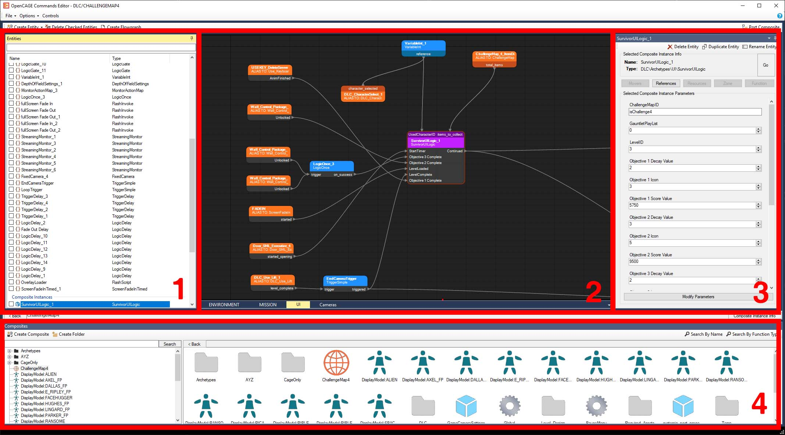
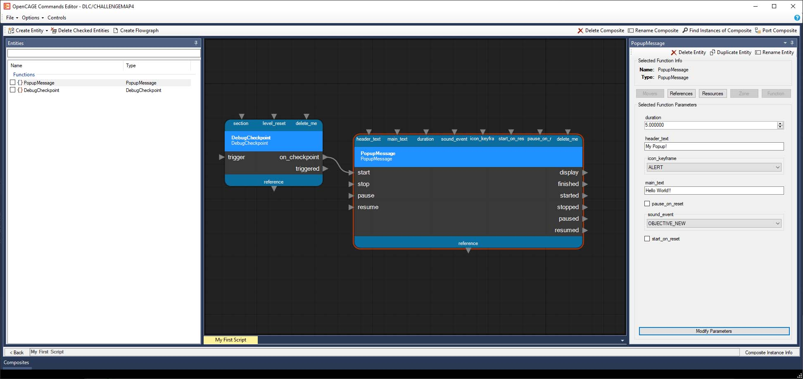
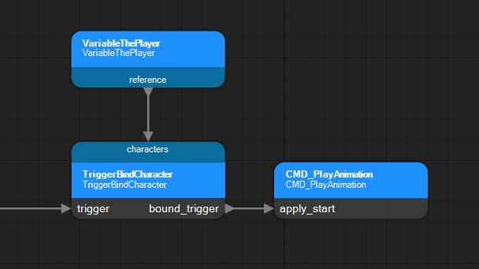
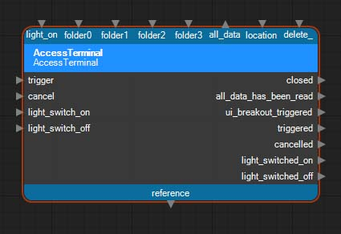
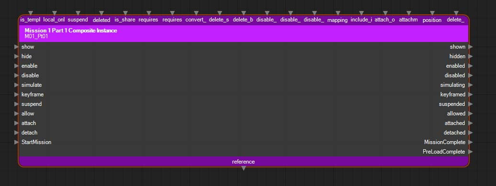
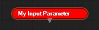
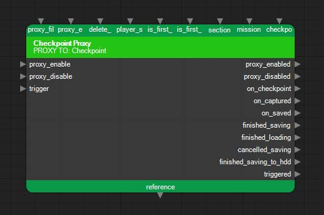
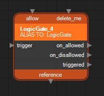

Alien: Isolation is built using a custom engine named Cathode, which utilises a custom node-based scripting system. This scripting system is used to power the entirety of a level - scripts not only define things like cutscenes, characters, mission objectives, interactables and triggers, but also define model placements, sound emitters, particle effects and more to build up a level’s visuals.
Cathode scripts would have been created and modified using a toolkit known as CAGE (the Creative Assembly Game Editor). While CAGE was never released to the public, the open-source community-driven project OpenCAGE contains an ever-growing feature set, which includes support for creating and modifying Cathode scripts!
The fundamentals of the Cathode scripting system are pretty straight forward and will be familiar to you if you've used any node-based scripting system before, such as Blueprint in Unreal Engine. Let’s go over all the terminology and explain the core concepts!
Cathode scripts are created inside containers called "composites". Within a composite there are "entities" which define logic; this logic can do invisible things like updating objectives when a player enters a trigger, or visible things like place and animate models.
A composite should generally hold either a collection of like-minded things (for example; a sub-section of a level to split it up from the wider level, like a room), or something that will be re-used a lot of times (for example; something like a push button, which would always need to contain an interactable trigger, model, animation, and some other scripting logic that you wouldn't want to have to re-make every time you need one). The former is just generally a way of keeping things easy to find and tidy, and the latter is just good practice to speed up level creation.
If you've used Unreal Engine before, this concept should seem very familiar to you: composites are essentially just Blueprints. Similarly if you've used Unity before, composites are kinda similar to Prefabs, just remember that they implicitly contain scripting logic within them. If you'd like to learn more about the fundamental concepts behind this workflow, I'd recommend checking out some Unreal Blueprint tutorials!
Lets go over the different types of composite you’ll come across within the script editor.
Root Composite
Every level has a "root" composite which is shown in OpenCAGE by an orange globe icon. The root composite is what is executed when the level is loaded in-game, so if you have nothing in there, your level will be blank! You may look at a level's root composite and be confused that there are only a few entities within it; this is because composites can be "instanced" within other composites.
A typical campaign level of Alien: Isolation is defined by two composites that are instanced inside the root composite, named "MISSIONS" and "ENVIRONMENT". The former contains composites that script the level's missions, and the latter contains composites that populate the level with models and effects. It's worth noting that this isn't a requirement you need to follow, but merely a convention that the developers followed to keep things tidy when navigating scripts. For example – it’s easier to modify a mission script if it’s contained in a nicely named composite within a “missions” composite, rather than being dumped somewhere with a load of model definitions for the environment: we’ll go over all the various Entity types in the next section, so this may become clearer to you then.
 PAUSEMENU/GLOBAL Composites
PAUSEMENU/GLOBAL Composites
As well as the root composite, there are two other composites which are loaded when our level starts up. These composites are the same across all levels, and would likely have been modified across all levels at the same time by CAGE. They’re kinda core-game logic rather than level-specific logic, and it’s probably best to leave them alone – regardless, let’s explain what they are.
The “PAUSEMENU” composite is used to perform logic while the game is paused. It contains definitions for blurring and distorting the camera in the way that you see behind the pause menu UI.
The “GLOBAL” composite is used to track progression and persistent game state across levels. It can be used to get and set information such as mission number, map, and other metadata that allows you to change things based on wider mission progression. For example: if a player enters a level and their GLOBAL mission number is a number that you have a mission script for, you’ll want to execute that mission script. Within the base game, you’ll see references to “AMB” scripts: these are the ambient mission scripts that are executed when a player enters a level on a mission number that doesn’t have a matching mission script. You can typically see the logic to do this within the level’s “MISSIONS” composite referenced off of the root.
DisplayModel Composites
"DisplayModel" composites are special in that they are used to define "display models” which can be used when spawning “Character” entities. A DisplayModel composite's name must begin with "DisplayModel:". The rest of the composite name is then used as the name of the display model that can be referenced elsewhere. For example, you may see “DisplayModel:ALIEN” in your level – this is the display model “ALIEN” for the Xenomorph Character entity.
Typically DisplayModel composites contain a series of ModelReference entities to define character body parts, and one EnvironmentModelReference entity which defines the environment animation resource to map all the models to an animatable skeleton.
It’s important to note that display models are purely model/skeleton data. They are not the actual NPCs. For example, when on a level containing the “ALIEN” display model, you’ll see that the actual Character of the Xenomorph is defined within “ARCHETYPES/NPCS/ALIEN/XENOMORPH_NPC”. That composite contains all of the Xeno’s FX, events, spawning logic, and other Character information passed along to the “NPC_LOGIC” composite instance, which then creates the actual Character entity.
NOTE: Work is still continuing on allowing modification of the environment animation resources, so for now you can only select ones that already exist in the level.
Regular Composites
We’re all done with the special composite types – the only other composites you’ll come across are just regular composites. Realistically every composite under the hood is actually just a “regular composite”, some are just handled differently by the engine (e.g. DisplayModels).
As mentioned, composites can contain a variety of entities, and can be instanced within eachother to build up reusable and complex logic. Let’s move on to talk about entities to make this clearer.
Within composites, “entities” can be created with "parameters" to define logic. These parameters can either be defined on the entity itself, or can be “linked” to another entity. Linking a parameter to another entity does one of two things; it either shares data from one entity to another (e.g. you may want a Boolean parameter (true/false) to be set by the result of another entity’s action), or acts as a trigger to execute our entity after the action of another (e.g. you may want to trigger logic sequentially during a scripted sequence, and activate entities linearly).
There are five major types of entity available to create within OpenCAGE, each marked with a unique icon.
Function Entities
Function entities are the most important entity to build up our logic and levels. Each one performs a certain action and can be given parameters to modify the outcomes. For example, you can use a ModelReference entity with a "resource" parameter pointing at a model and material to place a renderable instance within a level at a "position" (also defined by another parameter).
There are hundreds of function entities available to use, ranging from simple mathematical logic to more complex tasks like setting objectives and playing sounds. A full list of function entities and their parameters can be found here!
For programmers: think of function entities as literally executing methods in code - the parameters you give them are just method arguments. For Unreal Engine developers, again this concept should seem very familiar to you with standard Blueprint nodes.
It’s worth highlighting that there are two function entities which perform special additional logic that requires an additional editor window: “CAGEAnimation” entities and “TriggerSequence” entities. CAGEAnimation entities are special scripted sequences which contain a timeline and can modify parameters and activate triggers over a specified time period using keyframes and animation curves. TriggerSequence entities define a collection of references to other entities with a specified delay between each reference, this can then be used for a variety of things such as referencing a collection of entities for use in something like a “Zone”, or for triggering a parameter on those entities with a delay (for example, triggering a sequence of “LightReference” entities to turn on 1 second apart).
You may now be asking – what is a Zone? Cathode utilises something known as “level streaming”, which is a way of loading chunks of a level at runtime, rather than loading the entire thing at once. Zone entities are the key to this level streaming system – each Zone defines a collection of entities within it (typically “ModelReference” entities) which are then rendered/loaded when the Zone is active, and not when it’s inactive. This system is key to keeping memory overheads down in larger levels.
There are a variety of other specifics to dive into for other function entity types as you may expect, since they all perform bespoke logic that can have its own edge cases. The OpenCAGE docs don’t currently go into each and every function type as there are hundreds to cover, so recommended practice is to infer for yourself. Typically the names are pretty self explanatory – that, tied with reading and understanding the list of available parameters should probably be enough to get the function’s purpose. You can additionally use the “Find Function Uses” button within the script editor (located within the “Composites” panel) to find all instances of a function entity type within a level, which should give you good context surrounding the usage and setup of each. Don’t forget as well, the OpenCAGE Discord is always on hand to help!
Composite Instance Entities
Composite instance entities do exactly what you'd expect them to: instance a composite! Under the hood they're just function entities, however instead of allowing you to execute a pre-defined function within the game engine, they allow you to execute functionality you have defined within another composite.
These entities are super useful to allow your composites to become re-usable building blocks across your level; for example, if you have a model with a particle system and sound effect that you want to place a lot of times, you can simply create a composite for that and instance it in your level over and over, instead of manually re-creating that same configuration over and over. Best of all, doing that will mean that you can then update every instance at once, as modifying the composite will modify every instance at once.
Parameter Entities
A parameter entity is used to create an interface for the composite which is exposed when instancing it via a composite instance entity. This adds additional usefulness to your composites as you can build them around parameters and events which change their content and activate additional external logic after actions within your composite, just like building a function when coding.
Let’s explain with an example: I make a composite that displays an objective, then waits five seconds. I want to instance that composite to re-use that logic, but I don’t want the same objective to pop up every time, and I also want to know when the five seconds are up to trigger additional logic elsewhere. I could make two parameter entities: one which is an “Input String” type that connects to a SetPrimaryObjective entity to set the objective text, and one that is a “Target” type which connects from the LogicDelay entity’s event for finishing. These two parameter entities would then be visible and usable on any composite instance entities that instance the composite! I could set the objective text using my string parameter, and trigger other logic using the target parameter – all without ever touching the logic inside.
There are a variety of parameter entity types available covering all datatypes to input/output, as well as some specialised types for handling input triggers (named “Method”), output triggers (named “Target”), and for passing data when the composite instance is referenced (named “Reference”). Check out some existing composites to see them in action.
 Alias Entities
Alias Entities
Aliases are entities which point to entities within instanced composites within the current composite. Once you've pointed to the nested entity by creating a path to it, the alias then acts as a stand-in for that entity. For this reason, aliases are useful for creating overrides on child entities, or for linking parameters to child entities which are not directly within the current composite.
For a simple example, lets say you create a composite that contains two ModelReference entities with a Sound emitter, and instance it multiple times in your root composite to place it in various places around the level - but in one instance, you just want one of the ModelReferences to be visible. You could create an alias pointing to one of the child ModelReference entities contained within that specific composite instance, and apply a parameter on the alias to delete it. This allows you to continue using the same composite, but have the flexibility for variants.
Proxy Entities
Proxies are very similar to aliases, except instead of pointing to an entity relative to the current composite, they point to an entity relative to the root composite - giving you a proxy of the instance of an entity within the level as it will be at runtime (as the root composite is the one that is loaded for the level, see above for more info about the root composite). Because of this, proxies are generally used for script-driven things as they have the wider context of the level as it will be during gameplay. They must also be enabled in order to function, and aren't implicitly active like aliases.
As an example of the usage of a proxy, imagine you have a trigger which will be happening inside a composite you're instancing within your environment composite, and you want to know about the trigger within your mission script which is contained within another composite. From the root of the level, you could find the entity with the trigger, create a proxy of it, and then listen to the parameter with the trigger off of the proxy.
As proxies must also be enabled, you could have logic behind if the proxy is active to do things like show/hide ModelReference entities within composites instanced somewhere within the level.
As you can imagine - all of these pointers and cross-references can become hard to track: OpenCAGE contains a few features to try and make this easier. One of those is the "references" button which you can see after clicking on an entity - this will show you all entities which point to it. Additionally, an updated view for entering composite instances is in development, which will show overridden parameters directly on the entities they apply to, to make navigating aliases easier.
Now you're familiar with the fundamentals of the scripting system, lets take a look at the script editor, and build our first script.
To get to the script editor, load OpenCAGE and select "Edit Cathode Scripts". You can now select File and select a level from the Load Level option.
Interface Overview
Once a level has finished loading within the script editor, you'll be presented with the following interface:

- [1] Entity List - This shows you every entity within the current composite separated by type, with various additional information.
- [2] Flowgraph - This contains the composite's flowgraphs, creating links between entities to drive logic (more later!).
- [3] Entity Inspector - This holds information about the selected entity, and allows you to add/remove/modify associated parameters.
- [4] Composite Browser - This contains all composites available within the current level (note, if you don't like this layout, navigate to Options > Composite Display, and uncheck 'Use File Browser Composite Viewer')
By default, when you load a level in the script editor you'll be presented with its root composite. You can opt to either step in to composite instances within the root composite by selecting the instance entities and pressing the "Go" button in the entity inspector, or by searching for composites within the composite browser and selecting them from there. To select an entity, either click on it within the entity list, or select one of its nodes within the flowgraph.
The flowgraph area can be utilised to create links between entities to drive logic. For example, I could create a DebugCheckpoint entity which can be triggered from the in-game "Debug Checkpoints" menu. When that checkpoint is triggered, the entity's "on_checkpoint" pin is activated. I can hook other entities to that pin within the flowgraph to trigger additional logic when that happens. If you've ever used Blueprint or any other node-based scripting system this should be very familiar to you!
A composite can have any number of flowgraphs contained within it to define entity connections - typically it's best practice to keep similar logic contained within the same flowgraph (for example, all audio logic would usually be kept within an audio flowgraph within a composite). An entity can have any number of nodes within any of the composite's flowgraphs. You can easily locate nodes for entities by selecting the entity and pressing the 'References' button within the inspector. By default, selecting an entity will highlight the node for it within your active flowgraph, or take you to another flowgraph that contains it if it has no node within your current flowgraph.
Find the full controls for quickly navigating the flowgraph interface within the "Controls" menu tab in the script editor.
The whole script editor interface is resizable, dockable, and customisable. Your customisations will save between sessions. Find a variety of options for additional UI customisation within the "Options" menu tab.
Creating a Script
Lets build our first script and put all of this into practice. First, we'll create a composite for our logic. In the composite browser, press 'Create Composite' - lets call it "My First Script", and click 'Create'. Your new composite should have been created and opened within the script editor. We'll make this script simply show a popup when a debug checkpoint is triggered - so first, lets make an entity. Right click in the flowgraph interface and select Create Entity > New Function. Search for the function type "DebugCheckpoint", select it within the list, and click 'Create' - you should now see it within the entity list, and also within the flowgraph. It should also be selected, allowing you to see its default parameters in the inspector. By default, all pins are populated on nodes to make linking things simple - you can however right click on a node and remove its unused connections to make things neater.
Next, lets make our entity for showing the popup. Right click again in the flowgraph, select Create Entity > New Function, and this time search for "PopupMessage", then click 'Create'. Now we've got two entities in our composite, and a node for each of them within the flowgraph. We can utilise these nodes to create the link we're after, which is for the popup message to be shown after the debug checkpoint is called. To do this, simply drag the arrow on the "on_checkpoint" parameter on the debug checkpoint node across to "start" on the popup message node.
To customise the text that shows, with the popup message entity selected, find the "header_text" and "main_text" parameters and change them to your liking. Don't forget to click on the debug checkpoint entity and change the "section" parameter to something noticable - this is the name of the checkpoint that'll show in the UI.

Our composite is now complete! Now we need to instance it within the level. Navigate to the root composite (find the globe icon in the composite browser), right click in the entity list, and select Create Entity > New Instance of Composite. In the search field, search for the newly created composite "My First Script" and click 'Create'.
Save the level and launch the game via OpenCAGE to that same level (by going back to the main OpenCAGE window and pressing Launch Game), ensuring that 'Show Debug Checkpoints' is checked. You should now be able to pause the game and go to Load Game > Load Debug Checkpoint and find the "section" name you entered earlier. Select the checkpoint and you watch your popup be displayed on screen. Success! We've just made our first custom logic by adding custom entities, modifying parameters, and creating links with nodes. This is the basis for how everything works in the script editor.
It's important to note that not only do triggers create flows of logic, they can also be used to provide context to the triggered entities. For example, to play an animation on a character you must 'bind' the trigger to a character before calling the animation entity (CMD_PlayAnimation), which can be done like so:

VariableThePlayer gives us a reference to the player, which is passed to TriggerBindCharacter as the character to bind - the bound_trigger is then provided with the player bound to the trigger logic, which can be used by the CMD_PlayAnimation entity as context to apply the animation command. You'll find this used a lot with character commands.
Node Types
Here's a quick look at how each node type looks within the script editor:
Function Entity

|
|
Composite Instance Entity

|
|
Parameter Entity

|
|
Proxy Entity

|
|
Alias Entity

|
|